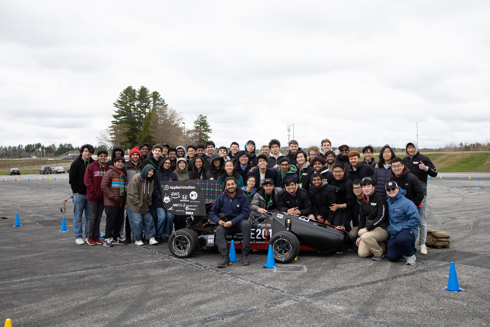
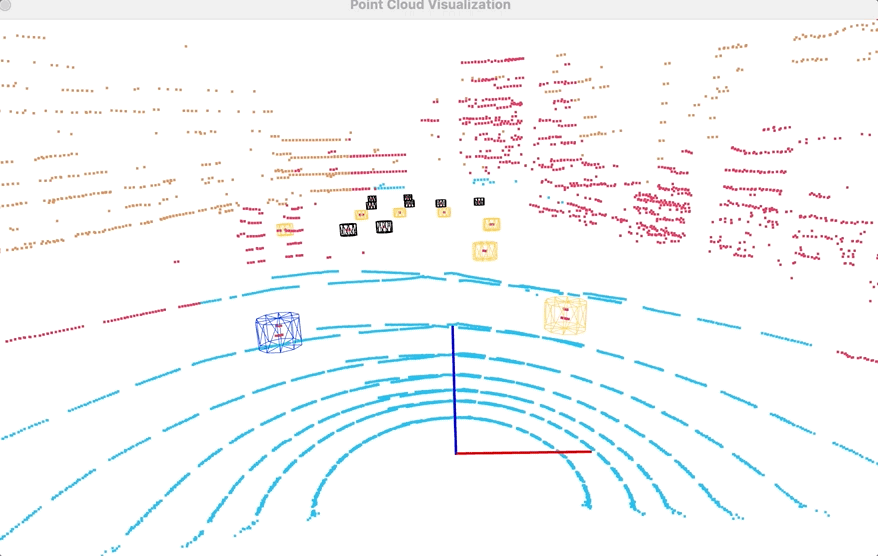

19a - Driverless FSAE Car

At the start of the 2022-2023 school year, Carnegie Mellon Racing - Driverless took on the ambitious project of converting our 2019 FSAE electric racecar into a fully-Driverless vehicle. As the Perceptions Captain for this project, I was in charge of a team of 8 that worked get all Perceptions algorithms working onboard the vehicle. This included using YOLOv5 object detection neural networks for cone detection as well as ground-filtering and point-cloud clustering algorithms to pick out cone clusters from our LiDAR point clouds.

YOLOv5 Object Detection Network
This gif shows the execution of our YOLOv5 Object Detection network that is responsible for locating blue, yellow, and orange cones in the input camera frames.
This model was trained on an open-source dataset maintained by the FSAE community, to which we added our own dataset augmentations. Specifically, the augmentations that we found worked best were:
- Gaussian Blur - simulated foggy conditions + drop in camera resolution
- Random Rotation + Translations - enabled model to detect cones at odd perspectives or fallen-over cones
We also explored a variety of methods for training the model with hyperparameter optimizations, specifically with a Genetic Algorithm.
In the end our model was able to achieve 92% accuracy of detection of cones and their corresponding colors. We will be experimenting with upgrading this model to YOLOv8 in the future in hopes of
improving performance and will be implementing better benchmarking profiles to improve our understanding of the accuracy of the model.

LiDAR Ground-Filtering + Pointcloud Clustering
In addition to the stereo vision pipeline, we use a LiDAR-based approach to get a separate number of cone estimates. Our LiDAR stack operates using the following two processes: 1 Our Ground-Filtering algorithm involves radially segmenting the pointcloud into different regions, identifying the lowest point in each segment, and then fitting a plane of best fit to all points across all regions. The algorithm can be tuned by changing how discrete the segmentation is, thereby allowing us to tradeoff accuracy for performance. Our pointcloud clustering algorithm works based on the DBSCAN algorithm, which is essentially a variant of K-Means that doesn't require prior knowledge of the number of expected clusters. Instead, the algorithm is initialized with the minimum number of points that are expected per cluster as well as the maximum distance between two points for them to be considered neighbors.
After 1500+ hours, we developed a Driverless racecar that completed the 1st autonomous lap at an American FSAE competition!